Severe Toothache
Throbbing pain that won’t ease up or keeps you awake — we find the cause and stop it.
Call about this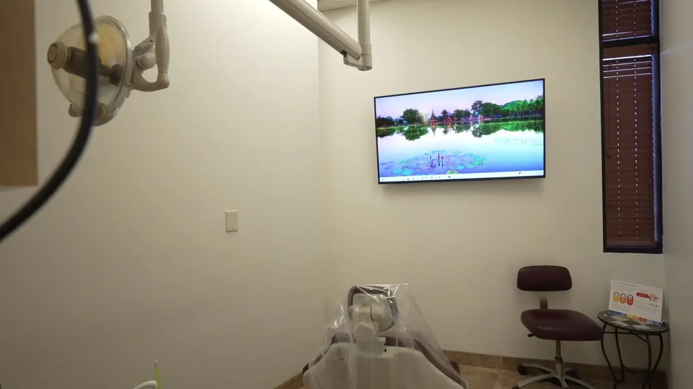
Emergency Dental Care Peoria, AZ
Severe toothache, a broken tooth, swelling or a tooth that needs to come out? We make every effort to see emergency patients the same day — call now and we’ll get you in at the earliest opening. New patients welcome, most PPO plans accepted.
Calling is the fastest way in — we prioritize emergency cases.
Searching for an emergency dentist near me? If you’re in pain, bleeding, swollen or have damaged a tooth, call our Peoria emergency dental clinic — we’ll tell you exactly what to do next.
Throbbing pain that won’t ease up or keeps you awake — we find the cause and stop it.
Call about thisSwelling, pressure, a bad taste or a pimple on the gum. Infections need prompt care.
Call about thisFrom a small chip to a fractured tooth — often repaired with bonding or a same-day crown.
Call about thisAn exposed tooth is sensitive and at risk. Bring the crown with you if you have it.
Call about thisKeep it moist and call immediately — quick action gives the best chance to save it.
Call about thisWhen a tooth can’t be saved, we remove it gently right here — often the same day you call.
Call about thisCracked dentures, partials or appliances repaired or replaced so you can eat and smile again.
Call about thisSudden gum swelling, bleeding or tenderness evaluated and treated quickly.
Call about thisThese steps from our Peoria team can protect your tooth and ease the pain while you’re on your way.
Hold it by the crown, never the root. Keep it moist in milk or gently back in the socket, and call us right away.
Save any pieces, rinse with warm water and hold a cold compress on your cheek to limit swelling.
Use a cold compress — never heat — and call promptly. Swelling means an infection may be spreading.
Keep the crown safe, keep the area clean and avoid chewing on that side until we see you.
Rinse with warm water and floss gently. Don’t put aspirin directly on the gums — it can burn the tissue.
Apply gentle pressure with clean gauze and a cold compress. Call us if bleeding doesn’t slow down.
Relief is the first step, not the whole job. Most emergency dental care is completed right here in our Peoria office, often in the same visit — from emergency tooth extraction to a same-day crown.
An emergency appointment focuses on understanding the problem quickly and getting you relief — while protecting your long-term oral health.
Tell us what’s happening and how severe it is. We give you guidance and arrange the earliest visit.
We briefly review your health history, medications and allergies so your care is safe.
We examine the area and take X-rays to find the cause — a crack, an infection or hidden damage.
Effective local anesthesia keeps you comfortable, and we explain each step before we begin.
A filling, bonding, a crown, root canal therapy or an extraction — we fix the immediate concern.
Clear home-care instructions, and a follow-up plan when more treatment is needed.
Unedited Google reviews from patients of our Peoria office.
I had a horrible toothache. They worked me into the schedule quickly. Unfortunately the tooth couldn't be saved and had to be pulled. It was a rather painless experience.
Everyone was friendly and caring. They explained everything thoroughly and were very helpful. A huge plus was the very short wait time in the waiting room and treatment area.
Dr. Sandhu and Maria were extremely knowledgeable and caring. They communicated well and listened carefully to my concerns. I feel that I am in good hands with them.
I am a longtime, very satisfied client of this practice and I was in need of a replacement for an ancient crown. Dr Powell and Maria, her able assistant, explained each step, accompanied by X-rays and other visuals, to put me at ease. It was the easiest and least painful dental procedure I have experienced. Dr Powell is an exacting practitioner of her craft, which made all the difference. Well done!
Compassion and competence.
Dr Powell is a true professional, she is patient, understanding and accommodating when you have health issue. Her assistant is also very kind. The crown she replaced fits perfectly, no problems whatsoever with it . Very fortunate to have a dentist that works with you.
I recently had my very 1st visit at Belmont Dentistry and I already feel like I’ve found my forever dentist. Dr. Powell was incredible, listened, was attentive and made me feel like a priority & not just a dollar sign. The entire staff was exceptional and made me feel welcomed. I appreciated the was pricing was very fair & well explained for my upcoming services. I give Belmont a 10/10!
Went in fir a semiannual cleaning, appt. time 7:30, out the door by 8:10. Always friendky and thorough.
A family-owned Peoria emergency dental clinic with the technology to fix most dental emergencies in one visit — and a team that genuinely cares.
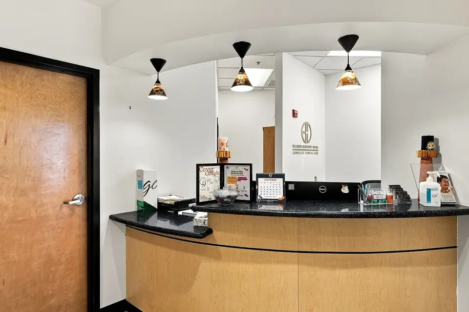
We prioritize emergency cases and make every effort to see you the same day you call.
Open from 7:30 am Tuesday to Thursday, plus alternate Mondays and Fridays.
Emergency extractions, root canals and same-day CEREC crowns — handled here, not referred out.
Digital X-rays and 3D CBCT imaging show exactly what’s wrong — on screen, explained in plain language.
Effective local anesthesia, headphones and blankets — with sedation options for anxious patients.
We check your insurance and explain costs up front. No surprise bills at checkout.
Getting out of pain shouldn’t be complicated. Here’s how we make emergency dental care in Peoria fast, comfortable and affordable.
Call as soon as symptoms start — we make every effort to see you the same day, and new patients are always welcome.
Call NowWe’re in-network with most PPO plans, file your claims and confirm coverage before treatment.
Check My InsuranceOur in-house membership covers exams, X-rays and cleanings with discounts on treatment — no insurance needed.
Ask About the PlanDon’t let cost delay urgent care — split treatment into monthly payments, subject to credit approval.
Book OnlineWhen you are in pain you want an experienced dentist, not a rotating associate. Our Peoria dentists handle emergency extractions, root canals and same-day crowns right here in the office.
 Owner Dentist
Owner DentistA fun, easygoing family and cosmetic dentist who believes patients are partners in their own care. He has years of experience in both emergency and restorative dentistry, backed by advanced implant and CEREC same-day crown training.
Book with Dr. Sandhu Dentist
DentistA collaborative, prevention-focused dentist who helps you understand the “why” behind every decision. Her favorite part of dentistry is helping patients overcome their fear — and her warm, empathetic approach has made her a trusted dentist for patients of all ages.
Book with Dr. PowellAdvanced training, professional memberships and hundreds of happy Peoria patients.
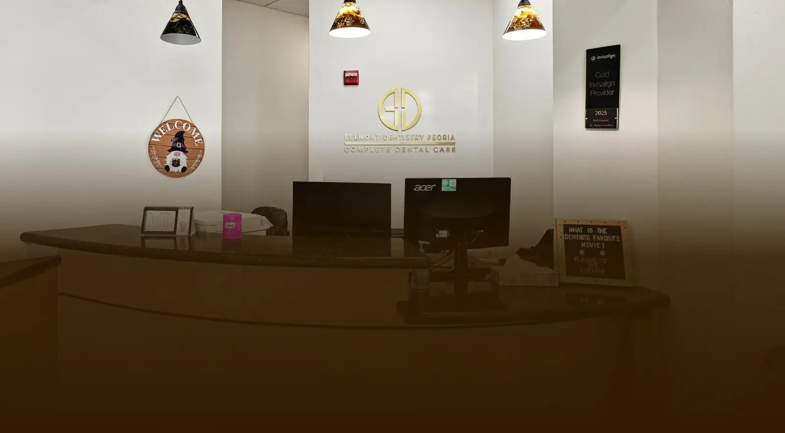
Pain shouldn’t have to wait on paperwork. Tell us your plan when you call and we’ll check your benefits — and if you don’t have insurance, you still have affordable options today.
Our front office works with dental plans every day and helps you get the most from the benefits you already pay for.
A dental clinic for patients with no insurance shouldn’t mean paying full price. Our in-house membership costs less than traditional insurance.
Start treatment now and pay over time with CareCredit, the healthcare credit card built for dental expenses.
Not sure if we take your plan?Call (623) 887-6008 — we’ll verify your benefits for free before your visit.
Check My Insurance*CareCredit financing is subject to credit approval. Insurance coverage varies by plan.
A calm, modern emergency dental clinic on W Thunderbird Rd — with 3D imaging and in-office crown milling so most emergencies are handled right here.
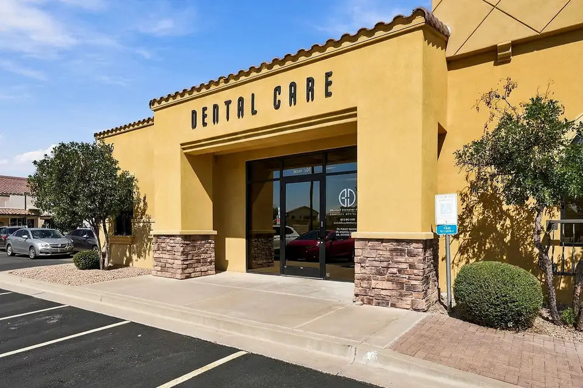

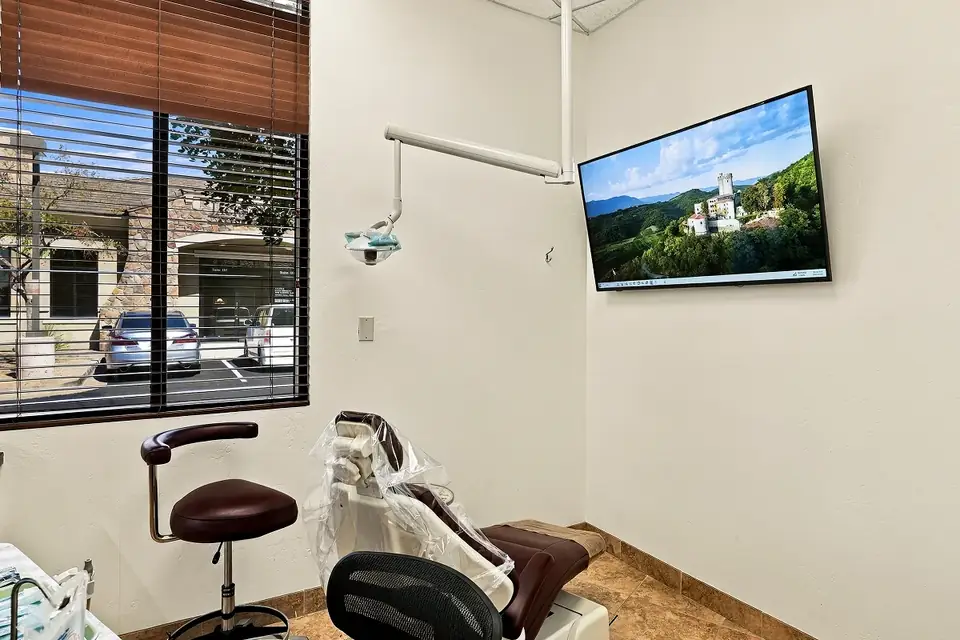
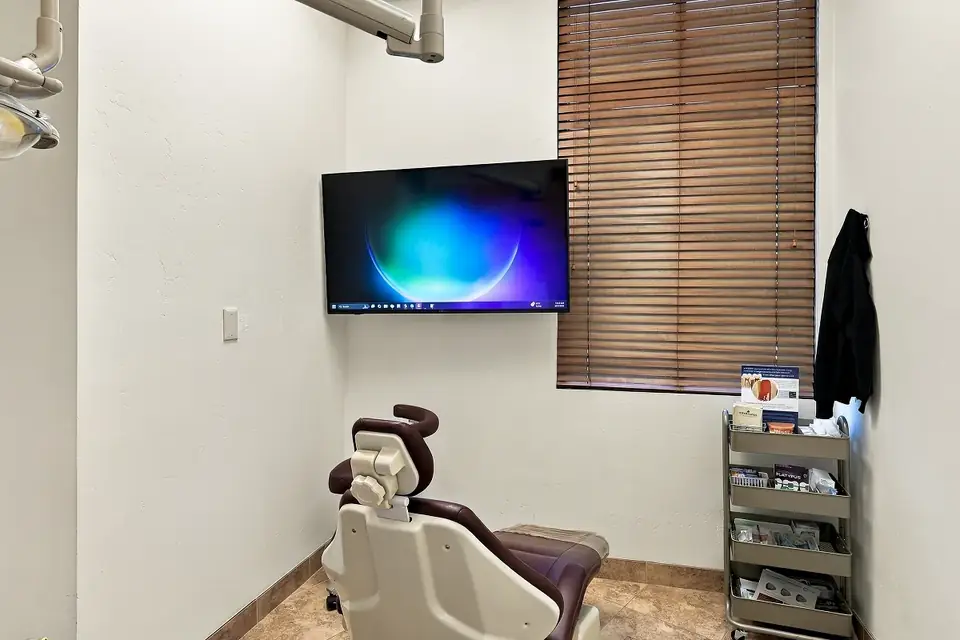
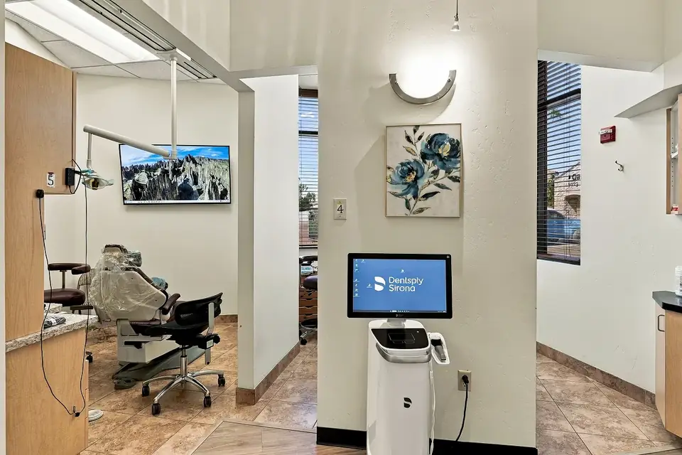
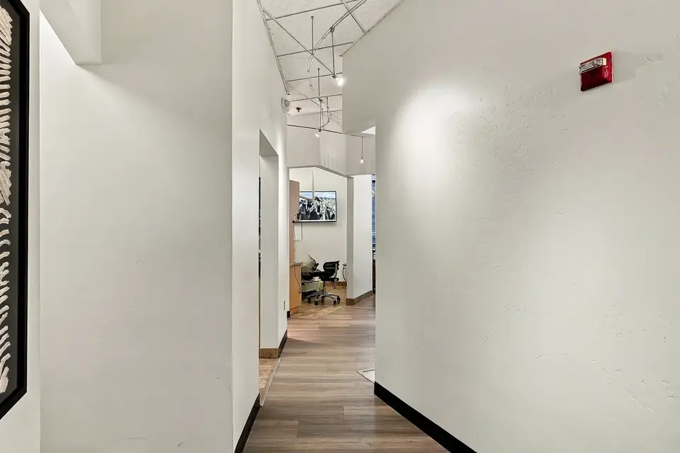
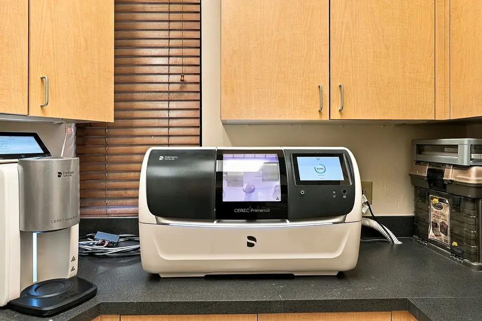
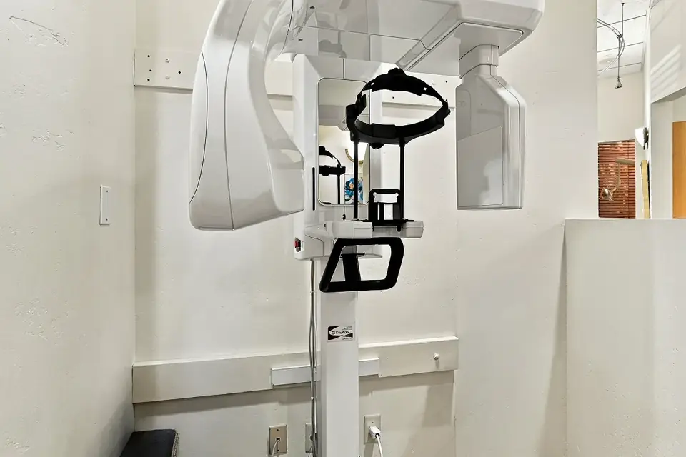
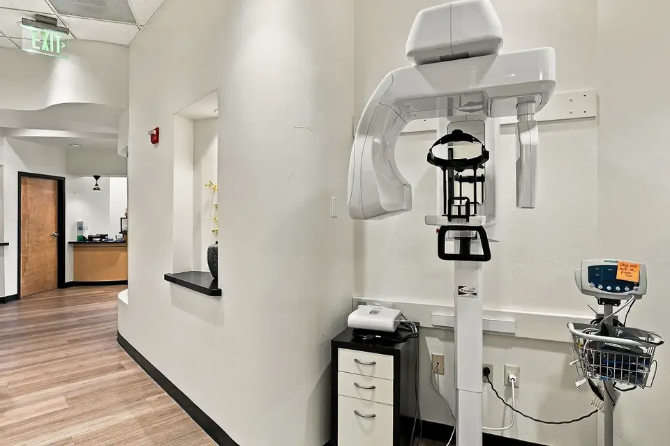
Quick answers for when something has gone wrong. If you are in pain right now, skip the reading — call us and we’ll take it from there.
Call Now (623) 887-6008Very often, yes. We make every effort to see emergency patients as soon as possible and often see them the same day. Call (623) 887-6008 as soon as the problem starts so we can get you in at the earliest opening.
Our Peoria office opens at 7:30 am Tuesday to Thursday, plus alternate Mondays and Fridays. The live status in the location section shows whether we’re open right now — call (623) 887-6008 and our team will tell you the earliest time we can see you.
Yes. When a tooth can’t be saved, emergency tooth extraction is done right here in our Peoria office. The area is thoroughly numbed first, you get clear aftercare instructions, and we can discuss options to replace the tooth once it heals.
The area is thoroughly numbed with local anesthetic before the procedure, so you should feel pressure but not pain. Some soreness and swelling afterward is normal and usually manageable with recommended pain relief and proper aftercare.
Any situation involving severe pain, uncontrolled bleeding, swelling, infection or injury to the teeth or mouth — for example a knocked-out tooth, a cracked tooth, a severe toothache or a dental abscess. When in doubt, call our office for guidance.
Rinse your mouth with warm water, gently floss to remove trapped food and apply a cold compress to your cheek. Take an over-the-counter pain reliever as directed and call our office promptly — toothaches often signal infection or decay that needs treatment.
Pick up the tooth by the crown, rinse it gently if dirty and try to place it back in the socket. If you can’t, store it in milk. Get to our office immediately — a tooth has the best chance of being saved when treated quickly.
Yes, in most cases. Depending on the damage, treatment may include bonding, a filling, a same-day CEREC crown or root canal therapy. Minor chips may only need smoothing or bonding.
Keep the piece if you can and call our office. Avoid chewing on that side and clean the area gently. A temporary dental cement from a pharmacy may offer short-term protection until you can be seen.
Our priority is relieving your pain. We use effective local anesthesia to keep you comfortable, explain each step before we begin, and sedation options may be available for anxious patients.
It depends on the exam, any X-rays needed and the treatment. We check your insurance benefits and explain costs before treatment, and patients without insurance can use the Belmont Dental Plan or CareCredit financing.
Your emergency dental clinic on W Thunderbird Rd — an easy drive from Arrowhead, Glendale, Sun City, Surprise and the rest of the West Valley.
Belmont Dentistry Peoria
7966 W Thunderbird Rd, Suite 101, Peoria, AZ 85381
*Monday & Friday hours run on alternate weeks — call to confirm.
Dental problems rarely get better on their own. Call our Peoria emergency dentist now — we make every effort to see you the same day.